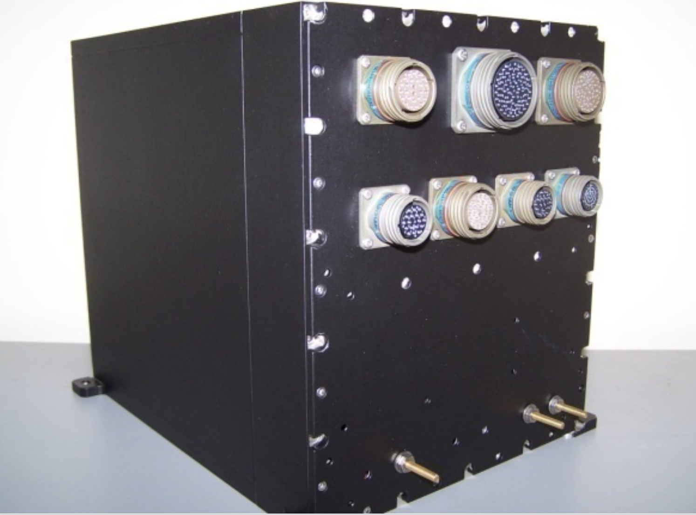
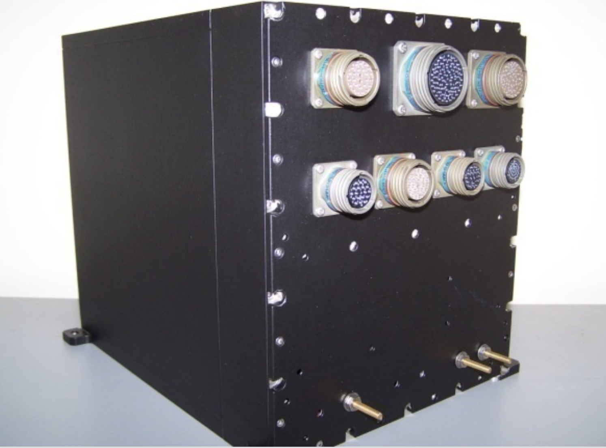
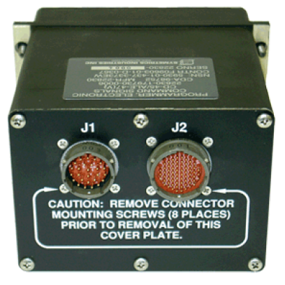
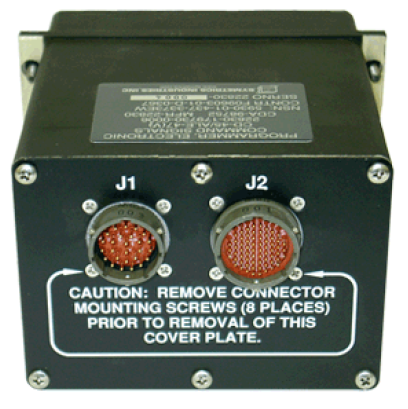
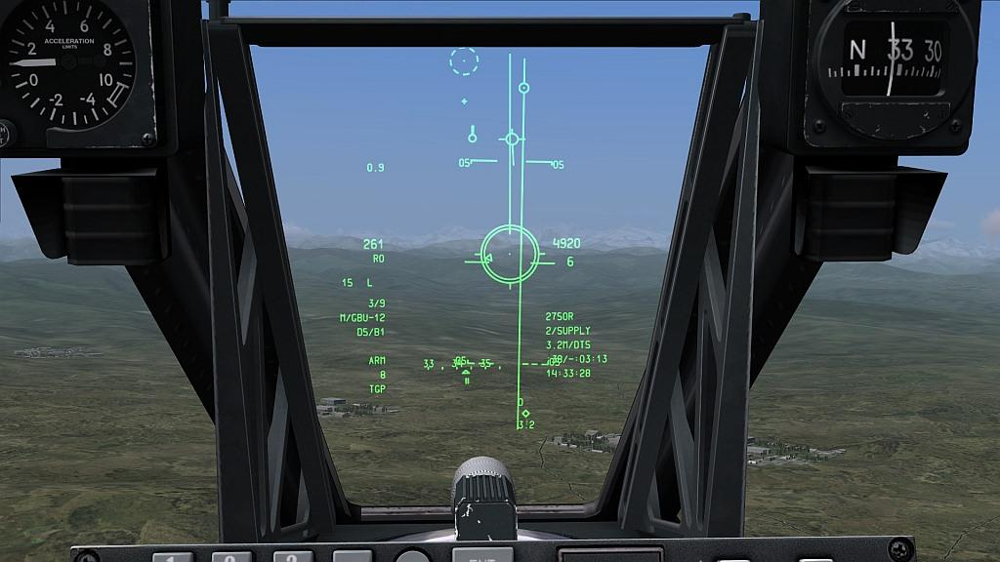

Past Performance Examples
C-130H ALCS
ALE-47 CMDS
ALQ-184 PS
A-10 HUD
TeleSampler/Controller
TeleDevices, LLC (TDL) engineers designed, tested and manufactured the C-130H aircraft’s Advanced Lighting Control System (ALCS) to provide form, fit and functional replacement
for the legacy ALCS which encountered serious parts obsolescence issues as well as lack of Technical Data Package (TDP).
C-130H ALCS is an airborne system used by the USAF, and TDL performed all engineering tasks in-house at our facility in Duluth, GA. TDL’s design of the new ALCS involved diverse engineering capabilities such as software/firmware development, Field Programmable Gate Array (FPGA) design, VHDL, DC- DC converters, micro-controllers, PCB design, mechanical engineering, production et cetera. Modernized C-130H ALCS was fully tested in the TDL’s lab to verify the functionality according to ATP, it was then tested on a C130H aircraft at Peterson AFB.
TDL undertook redesign, fabrication of ALCS units, performed training, debugging/repairs, ATP/ATR development, Automatic Test System development, and TDP development—which included delivery of Engineering Drawings in accordance with the USAF drawing requirements.
C-130H ALCS is an airborne system used by the USAF, and TDL performed all engineering tasks in-house at our facility in Duluth, GA. TDL’s design of the new ALCS involved diverse engineering capabilities such as software/firmware development, Field Programmable Gate Array (FPGA) design, VHDL, DC- DC converters, micro-controllers, PCB design, mechanical engineering, production et cetera. Modernized C-130H ALCS was fully tested in the TDL’s lab to verify the functionality according to ATP, it was then tested on a C130H aircraft at Peterson AFB.
TDL undertook redesign, fabrication of ALCS units, performed training, debugging/repairs, ATP/ATR development, Automatic Test System development, and TDP development—which included delivery of Engineering Drawings in accordance with the USAF drawing requirements.
 

The AN/ALE-47(V) Countermeasures Dispenser System (CMDS) is an integrated, threat-adaptive, reprogrammable, computer-controlled airborne
defensive system. The AN/ALE-47 dispenses countermeasure decoys (Chaff, Flare and others) against radar and infrared homing threats to
enhance aircraft survivability.
TDL initially performed failure trend and failure mode analyses on ALE-47 to identify not only the types of failures occurring most often in the field,
but also to identify the root causes of these anomalies. TDL then redesigned ALE-47 CCAs and performed first article development, qualification testing , and TDP development.
TDL designed, fabricated, assembled, tested and qualified ALE-47 Programmer Power Supply CCA, Sequencer Fire Source CCA, and CDU Power Supply Connector Interface CCAs. TDL has received exceptional CPAR from the US Air Force for the quality of the work performed in every facet of the program. Currently, TDL's JV team is awarded 7.5 years ALE-47 Production Contract which also includes development of Automatic Test System to test every ALE-47 SRU and LRU.
TDL designed, fabricated, assembled, tested and qualified ALE-47 Programmer Power Supply CCA, Sequencer Fire Source CCA, and CDU Power Supply Connector Interface CCAs. TDL has received exceptional CPAR from the US Air Force for the quality of the work performed in every facet of the program. Currently, TDL's JV team is awarded 7.5 years ALE-47 Production Contract which also includes development of Automatic Test System to test every ALE-47 SRU and LRU.
 

TeleDevices, LLC, under terms of the contract awarded by the US Air Force, was tasked to design, build and become qualified manufacturer of Low Voltage
Power Supply (LVPS) used on the AN/ALQ-184 Electronic Attack (EA) Pod, which provides primary self-defense against enemy radar-guided
air defense systems for the A-10 and F-16 aircrafts. This switch-mode, high-efficiency power supply provided +5.2VDC, +64VDC, and +15/ 15 VDC outputs IAW the specifications
provided.
TDL was tasked to design, reverse engineer, and build functional, flight - worthy prototypes, perform integration and testing to meet the same form, fit, and functional compatibility with the original unit. TDL engineers used a modular approach to design the high efficiency LVPS where use of a backplane eliminated all the wiring. Planar transformers were implemented to improve reliability and manufacturability. Modular design of this switched mode power supply also made manufacturing as well as repairs and maintenance easier. Modular design with backplane resulted in improved reliability, maintainability, and testability.
TDL was tasked to design, reverse engineer, and build functional, flight - worthy prototypes, perform integration and testing to meet the same form, fit, and functional compatibility with the original unit. TDL engineers used a modular approach to design the high efficiency LVPS where use of a backplane eliminated all the wiring. Planar transformers were implemented to improve reliability and manufacturability. Modular design of this switched mode power supply also made manufacturing as well as repairs and maintenance easier. Modular design with backplane resulted in improved reliability, maintainability, and testability.

The Head-Up Display (HUD) is an element of the A/OA-10 navigational system and is considered a subset of the A-10A Inertial Navigation System’s (INS),
which interfaces to the Integrated Fire and Flight Control Computer (IFFCC) and HUD Control Panel. The HUD provides the pilot with a visual display
of weapon delivery and target information in both day and night operations. In addition, the HUD also provides real-time simplified visual aids
for normal flight operations.
TDL engineers redesigned HUD system’s Low Voltage Power Supply (LVPS), LVPS CBA, Ambient Light Sensor board etc. Mentor Graphics EDA tools such as DxDesigner, ModelSim, PADS were used for schematic capture, simulation and PCB layout. TDL engineers reverse engineered FPGA and developed a complex algorithm for performing positional distortion correction of the symbols. TDL engineers developed LabVIEW/PXIe based Automatic Test & Calibration System to implement an innovative display calibration procedure using very high resolution camera. TDL engineers used MatLab for performing triangulation algorithm and developed software to generate distortion correction data in a proper format for high precision calibration of the HUD.
TDL engineers redesigned HUD system’s Low Voltage Power Supply (LVPS), LVPS CBA, Ambient Light Sensor board etc. Mentor Graphics EDA tools such as DxDesigner, ModelSim, PADS were used for schematic capture, simulation and PCB layout. TDL engineers reverse engineered FPGA and developed a complex algorithm for performing positional distortion correction of the symbols. TDL engineers developed LabVIEW/PXIe based Automatic Test & Calibration System to implement an innovative display calibration procedure using very high resolution camera. TDL engineers used MatLab for performing triangulation algorithm and developed software to generate distortion correction data in a proper format for high precision calibration of the HUD.

TeleDevices, LLC (TDL) has designed TeleSampler, an Automatic Stormwater Sampler with built-in remote
communication. This product has taken the hassle out of NPDES stormwater monitoring!
TeleSampler not only monitors the rainfall, grabs samples but also reports the data
directly to your office!
TeleSampler can be easily programmed on-site using a hand-held terminal or a laptop. You can set the rainfall level at which the sample is taken. In the test mode, you can test the pump, battery voltage, level sensor and communication capability of TeleSampler.
Other environmental products TDL has developed include TeleControllers. TDL has developed Simplex and Duplex TeleControllers with built-in telemetry units which provide a low cost SCADA solution. These TeleControllers are ideal for applications such as Grinder Pump Stations, Low Pressure Sewer systems, Onsite Waste water Treatment systems etc. Traditional SCADA systems (used for the large wastewater treatment plants or large lift stations) are just too expensive for many applications. TeleControllers are fully solid-state with integrated pump control and telemetry functions built in to a single compact unit. Yet, with all these great features, TeleControllers are very affordable!
TeleSampler can be easily programmed on-site using a hand-held terminal or a laptop. You can set the rainfall level at which the sample is taken. In the test mode, you can test the pump, battery voltage, level sensor and communication capability of TeleSampler.
Other environmental products TDL has developed include TeleControllers. TDL has developed Simplex and Duplex TeleControllers with built-in telemetry units which provide a low cost SCADA solution. These TeleControllers are ideal for applications such as Grinder Pump Stations, Low Pressure Sewer systems, Onsite Waste water Treatment systems etc. Traditional SCADA systems (used for the large wastewater treatment plants or large lift stations) are just too expensive for many applications. TeleControllers are fully solid-state with integrated pump control and telemetry functions built in to a single compact unit. Yet, with all these great features, TeleControllers are very affordable!

C-130H ALCS
ALE-47 CMDS
ALQ-184 PS
A-10 HUD
TeleSampler/Controller